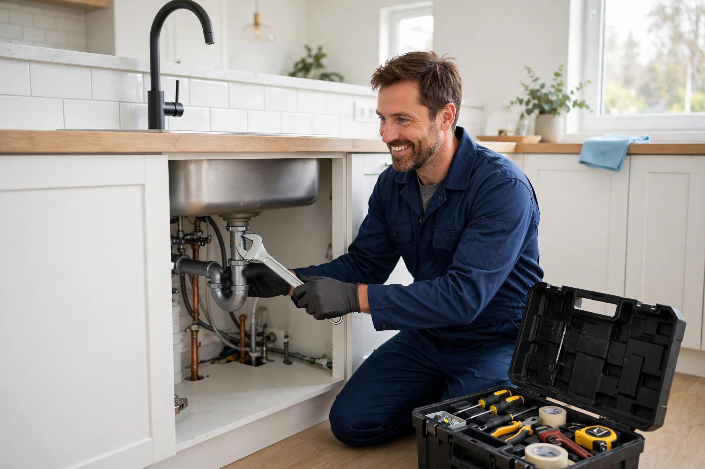
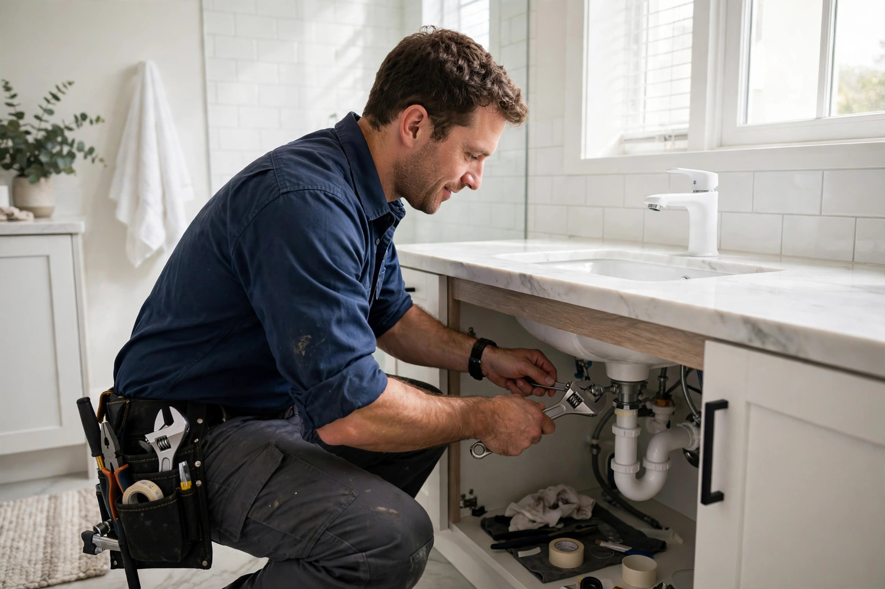
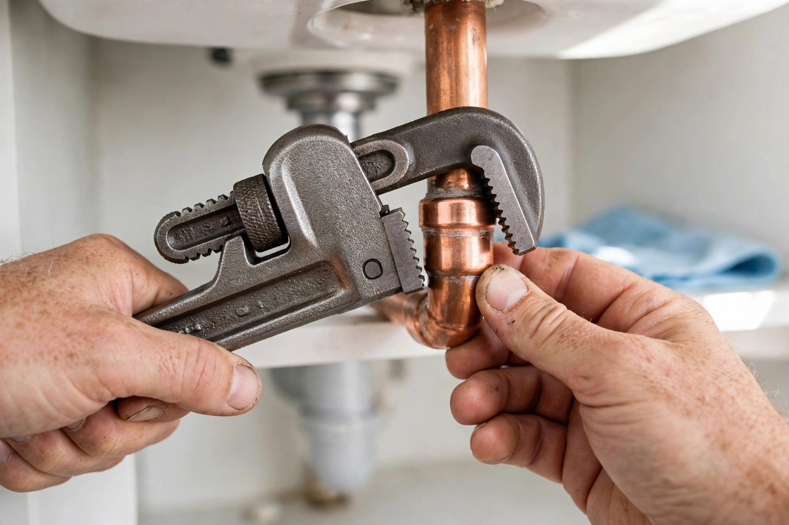
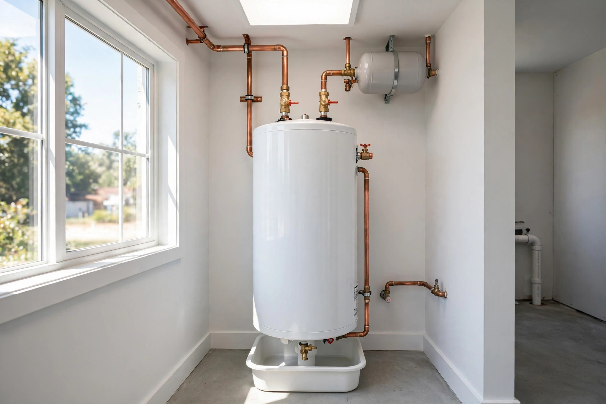

Pipe repair & replacement
Leaking or burst pipes tracked down and fixed — water, gas and drain lines.

DeRidder, Louisiana · Plumber · Mon–Fri 9 AM–6 PM
Rated 3.7 out of 5 from 6 reviews: pipe repair, bathrooms and kitchens, sewer lines and fixtures — honest plumbing for DeRidder homes.
What we do
Leaking or burst pipes tracked down and fixed — water, gas and drain lines.
Sinks, toilets, faucets and remodel rough-ins for baths and kitchens.
Plumbing service for businesses and rental properties — kept running right.
Sewer line diagnosis and repair that gets your system flowing again.
Faucets, toilets and fixtures installed cleanly and tested before we leave.
Mystery leaks tracked to the source — we find it, show you and fix it.

Why choose us
Mr. Foreman will spend the time to find your real problem — and if it isn't a plumbing problem, he'll tell you straight and won't charge you for the search. That's the kind of honesty DeRidder counts on.
On the job


Word on the street
Good to know
Pipe repair and replacement, bathroom and kitchen plumbing, commercial plumbing, sewer line services, fixture installation and leak detection.
Yes — we handle gas line leaks and repairs. If you smell gas, call us at (337) 463-4447 right away.
That's our specialty. We'll trace the leak to its source and show you exactly what we find — and if it isn't plumbing, we'll tell you honestly.
Monday through Friday, 9:00 AM to 6:00 PM. Call (337) 463-4447 to schedule.
Come see us